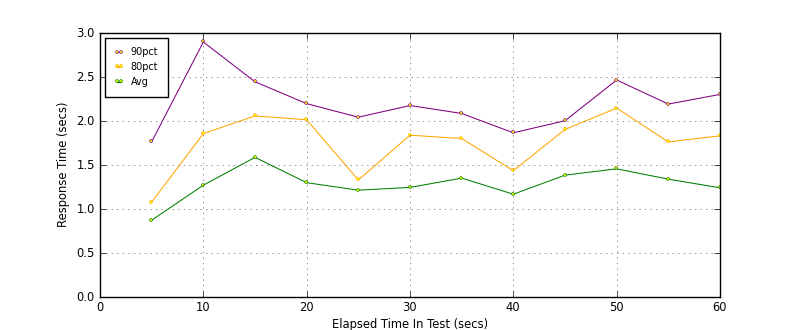
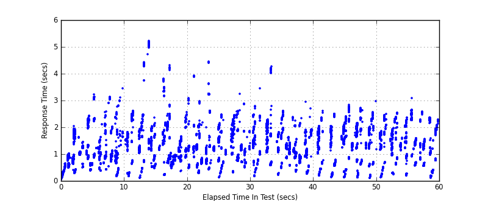
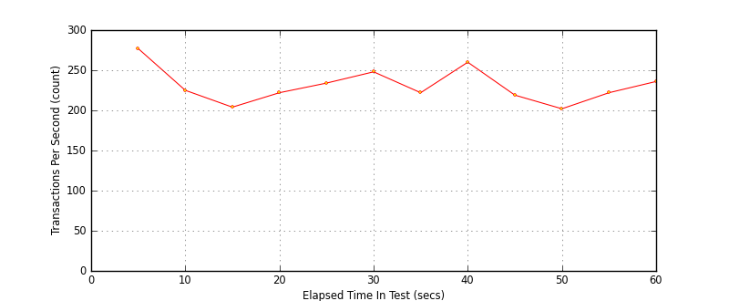

Performance Results Report
Summary
transactions: 14173
errors: 0
run time: 60 secs
rampup: 0 secs
test start: 2017-05-25 11:18:35
test finish: 2017-05-25 11:19:35
time-series interval: 5 secs
workload configuration:
| group name | threads | script name |
|---|
| user_group-10 | 20 | redis_stress.py |
| user_group-11 | 20 | redis_stress.py |
| user_group-12 | 20 | redis_stress.py |
| user_group-13 | 20 | redis_stress.py |
| user_group-14 | 20 | redis_stress.py |
| user_group-15 | 20 | redis_stress.py |
| user_group-2 | 20 | redis_stress.py |
| user_group-3 | 20 | redis_stress.py |
| user_group-1 | 20 | redis_stress.py |
| user_group-6 | 20 | redis_stress.py |
| user_group-7 | 20 | redis_stress.py |
| user_group-4 | 20 | redis_stress.py |
| user_group-5 | 20 | redis_stress.py |
| user_group-8 | 20 | redis_stress.py |
| user_group-9 | 20 | redis_stress.py |
All Transactions
Transaction Response Summary (secs)
| count | min | avg | 80pct | 90pct | 95pct | max | stdev |
|---|
| 14173 | 0.043 | 1.272 | 1.833 | 2.204 | 2.453 | 5.206 | 0.715 |
Interval Details (secs)
| interval | count | rate | min | avg | 80pct | 90pct | 95pct | max | stdev |
|---|
| 1 | 1387 | 277.40 | 0.043 | 0.873 | 1.078 | 1.763 | 1.986 | 2.427 | 0.526 |
| 2 | 1129 | 225.80 | 0.165 | 1.271 | 1.857 | 2.898 | 3.074 | 3.442 | 0.779 |
| 3 | 1022 | 204.40 | 0.095 | 1.587 | 2.058 | 2.446 | 5.005 | 5.206 | 1.135 |
| 4 | 1111 | 222.20 | 0.218 | 1.299 | 2.014 | 2.197 | 3.173 | 4.313 | 0.762 |
| 5 | 1172 | 234.40 | 0.279 | 1.214 | 1.330 | 2.043 | 3.001 | 4.435 | 0.689 |
| 6 | 1242 | 248.40 | 0.122 | 1.245 | 1.839 | 2.176 | 2.280 | 3.229 | 0.570 |
| 7 | 1113 | 222.60 | 0.164 | 1.351 | 1.801 | 2.086 | 2.234 | 4.267 | 0.671 |
| 8 | 1301 | 260.20 | 0.256 | 1.168 | 1.436 | 1.866 | 2.132 | 2.950 | 0.490 |
| 9 | 1095 | 219.00 | 0.129 | 1.385 | 1.904 | 2.003 | 2.407 | 2.599 | 0.636 |
| 10 | 1011 | 202.20 | 0.107 | 1.456 | 2.147 | 2.466 | 2.579 | 2.955 | 0.755 |
| 11 | 1110 | 222.00 | 0.132 | 1.339 | 1.763 | 2.193 | 2.300 | 2.535 | 0.567 |
| 12 | 1180 | 236.00 | 0.108 | 1.241 | 1.831 | 2.302 | 2.485 | 3.070 | 0.655 |
Graphs
Response Time: 5 sec time-series

Response Time: raw data (all points)

Throughput: 5 sec time-series
